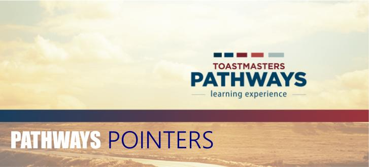

Go to link below, click the path of i
nterest and you will see which projects are involved.
click here
-
Designed by Frank Storey, DTM :: District 18 :: Linthicum, MD :: 410.850-5728 :: fstorey1943@gmail.com
-
Click here